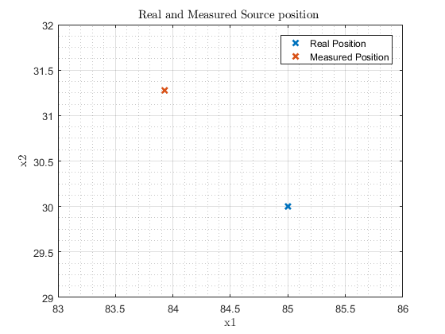
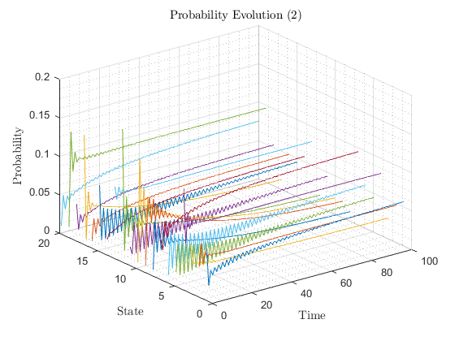
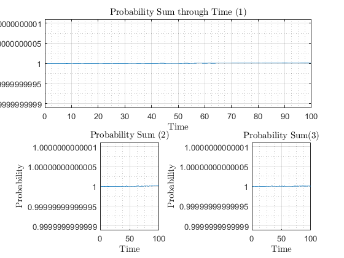
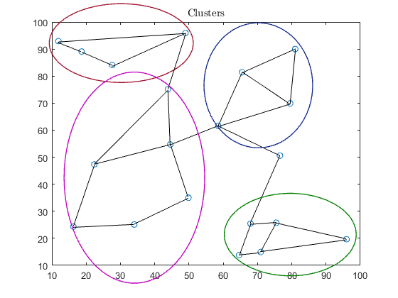
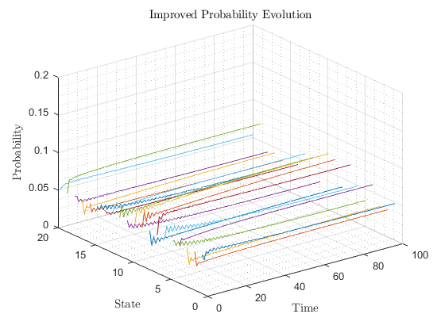
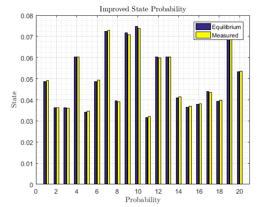
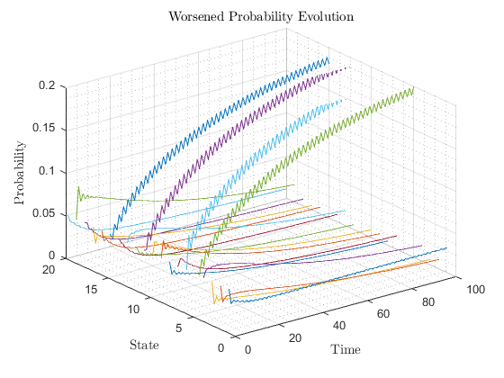
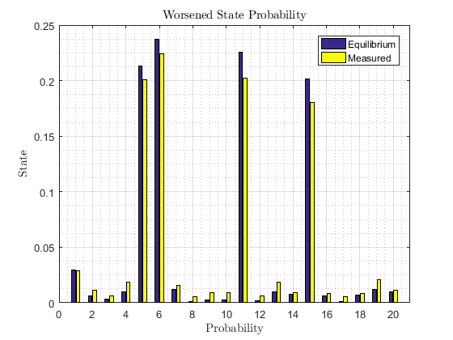
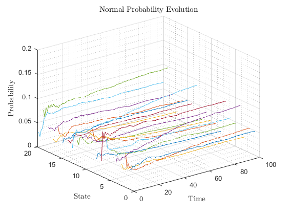

Project by Dinis Rodrigues nº79089 and José Fernandes nº82414
For the 1st Laboratory of MSIM
Contents
Ex2.a)
function main
close all %load file var=load('MarkovChain.mat'); P=var.P; %get eigenvalues and vectors [V,D]=eig(P'); for i=1:20 for j=1:20 if i==j vec(i)=abs(1-D(i,j)); end end end [M,I]=min(vec); %return index of eigenvector corresponding to the eigenvalue=1 %transpose matrix for better understanding V_t=V(:,I)'; %find vector by D=1 %theoretical equation for normalization norm=sum(V_t); v_param=1/norm; V_norm=V_t*v_param; %plot figure figure bar(V_norm) grid on;grid minor xlabel('Probability','Interpreter','Latex'); ylabel('State','Interpreter','Latex'); title('State Probability','Interpreter','Latex'); xlim([0 21]) %prove the sum is 1 figure bar(sum(V_norm)) xlim([0 2]) xlabel('Graph','Interpreter','Latex'); ylabel('Probability','Interpreter','Latex'); title('Probability Sum','Interpreter','Latex'); %get most and less likely to happen [M1,I1]=max(V_norm); [M2,I2]=min(V_norm); maximo=num2str(I1); minimo=num2str(I2); display(strcat('The more likely state to happen is: ',maximo)) display(strcat('The least likely state to happen is: ',minimo))
The more likely state to happen is:7 The least likely state to happen is:17
Ex2.b)
%given values sigma2=0.01; %deviation QP=sigma2; P0=100; %from file anchor_X1=var.nodePos(:,2); anchor_X2=var.nodePos(:,3); anchors=[anchor_X1 anchor_X2]'; token_X=var.sourcePos'; X=[token_X zeros(size(token_X)) anchors]'; D=pdist(X,'euclidean'); square=squareform(D); %norm values -> ||x-ai|| distance = square(1,3:end); % Source-anchor distances -> ||x-ai||^2 anch_norm = square(2,3:end); % Anchor norms -> ai n_trial=1000; %professor asked for 1000 trials n_anchor=V_norm*n_trial; n_anchor=round(n_anchor); num=1; for i=1:20 for j=1:n_anchor(1,i) di(num)=distance(i); a(:,num)=[anchors(1,i), anchors(2,i)]; an(num)=anch_norm(i); num=num+1; end end Pot = P0./(di.^2); % Noiseless RSSI stdev = 1e-1; % Log-noise standard deviation %stdev = 0; Pot = Pot.*exp(stdev*randn(size(Pot))); % Introduce noise Pot = QP*round(Pot/QP); % Quantize power measurements n = 2; % Embedding dimension % Localize source by least-squares A = [-2*repmat(Pot,[n 1]).*a; -ones(size(Pot)); Pot]'; b = (-Pot.*(an.^2))'; % RLS formulation (one-shot) RlsPar = struct('lam',1); [e,w,RlsPar] = qrrls(A,b,RlsPar); figure scatter(anchors(1,:), anchors(2,:)); hold on %plot real position plot(token_X(1), token_X(2), 'rx','linewidth',2); %plot measured position plot(w(1),w(2), 'cd','linewidth',2); grid on; grid minor; hold off %plot description title('Source and Anchors position','Interpreter','Latex') xlabel('x1','Interpreter','Latex'); ylabel('x2','Interpreter','Latex'); legend('Anchors Position','Real Source Position','Measured Source Position','Location','northoutside') %plot a close look figure %plot real position plot(token_X(1), token_X(2), 'rx','linewidth',2); hold on %plot measured position plot(w(1),w(2), 'd','linewidth',2); grid on; grid minor; ylim([29 32]) xlim([83 86]) legend('Real Position','Measured Position') title('Real and Measured Source position ','Interpreter','Latex') xlabel('x1','Interpreter','Latex'); ylabel('x2','Interpreter','Latex'); hold off fprintf('Real Source Position -> (%.2f,%.2f) \n',token_X(1), token_X(2)); fprintf('Source Measured Position -> (%.2f,%-2f) \n',w(1),w(2));
Real Source Position -> (85.00,30.00) Source Measured Position -> (83.91,31.176803)
Ex2.c)
%make minitial conditions transponsed Pi_init=[randfixedsum(20,1,1,0,1) randfixedsum(20,1,1,0,1) randfixedsum(20,1,1,0,1)]'; %see external functions Pi_fin=zeros(20,3); %set time time=100; %set variables X = repmat((1:time)',[1 20]); Y = repmat(1:20,[time 1]); P=var.P; for i=1:3 Pi=zeros(time,20); %set initial conditions Pi(1,:)=Pi_init(i,:); %theorical equation for j=2:time Pi(j,:)=Pi(j-1,:)*P; end %Plot 3d figure figure plot3(X,Y,Pi); grid on; grid minor; Pi_fin(:,i)=Pi(100,:); aux=strcat('Probability Evolution (',num2str(i),')'); title(aux,'Interpreter','Latex'); xlabel('Time','Interpreter','Latex'); ylabel('State','Interpreter','Latex'); zlabel('Probability','Interpreter','Latex'); zlim([0 0.2]) end Sum=[sum(Pi_init(1,:)) sum(Pi_init(2,:)) sum(Pi_init(3,:))]; figure bar(Sum) ylim([0 1.2]) title('Probability Sum of the different graphs','Interpreter','Latex'); xlabel('Probability Evolution Graph','Interpreter','Latex'); ylabel('Probability','Interpreter','Latex');
Given the fact that the initial conditions must be stochastic and valid. We made 3 different sets of initial conditions where all of them had a total probability of 1. We can see that no matter the initial condition they all tend to the equilibrium point.
Ex2.d)
%plot subsets
createfigure(anchor_X1,anchor_X2)
 There are 4 clusters in this figure, we chose only two where there is a greater possibility of the token spending more time on it. We chose the top left corner cluster (6-11-5-15) and the bottom righ one (12-10-17-9-8). Both of them have 80% chances of staying in. In this first trial we will try to improve the circulation of these two clusters, we need to better distribute manually the transition probabilities of the clusters.
P=var.P; %For anchor 1 (add more transition probability to go the the top left cluster) P(1,6) = 0.3; P(1,7) = 0.3; P(1,20) = 0.4; %For anchor 6 (improve trasition probability to get out of the top left cluster) P(6,1) = 0.3; P(6,15) = 0.4; P(6,11) = 0.3; %For anchor 3 (improve trasition probability to to the bottom right cluster) P(3,12) = 0.5; P(3,19) = 0.5; %For anchor 12 (improve trasition probability to get out of the bottom right cluster) P(12,3) = 0.3; P(12,8) = 0.3; P(12,10) = 0.4;
we felt no need to change connections between anchors, because if we distribute envenly the transition probabilities, it will cover all the anchors anyway. Only the time it spends on the anchor matters, not the connection between them.
[V,D]=eig(P'); for i=1:20 for j=1:20 if i==j vec(i)=abs(1-D(i,j)); end end end [M,I]=min(vec); %return index of eigenvector corresponding to the eigenvalue=1 %transpose matrix for better understanding V_t=V(:,I)'; %find vector by D=1 %theoretical equation for normalization norm=sum(V_t); v_param=1/norm; V_norm=V_t*v_param; figure bar(V_norm) grid on;grid minor xlabel('Probability','Interpreter','Latex'); ylabel('State','Interpreter','Latex'); title('Improved State Probability','Interpreter','Latex'); xlim([0 21]) %prove the sum is 1 figure bar(sum(V_norm)) xlim([0 2]) xlabel('Graph','Interpreter','Latex'); ylabel('Probability','Interpreter','Latex'); title('Probability Sum','Interpreter','Latex'); ylim([0 1.2]) %Convergence Plot %set variables time=100; X = repmat((1:time)',[1 20]); Y = repmat(1:20,[time 1]); Pi=zeros(time,20); %set initial conditions Pi(1,:)=randfixedsum(20,1,1,0,1)'; %theorical equation for j=2:time Pi(j,:)=Pi(j-1,:)*P; end %Plot 3d figure figure plot3(X,Y,Pi); grid on; grid minor; title('Improved Probability Evolution','Interpreter','Latex'); xlabel('Time','Interpreter','Latex'); ylabel('State','Interpreter','Latex'); zlabel('Probability','Interpreter','Latex'); zlim([0 0.2])  
Comparing this plot with the one of 2.a) we can see that this one is much better distributed. If we change the distribution of course the convergence will change, and that is what we see in the last figure. Now we will try harm the distribuition. We will make it so it stays much longer withint the clusters discussed above.
P=var.P; %For anchor 1 (add more transition probability to go the the top left cluster) P(1,6) = 0.8; P(1,7) = 0.1; P(1,20) = 0.1; %For anchor 6 (make it more difficult to go to anchor 1, so it stays in the cluster) P(6,1) = 0.1; P(6,15) = 0.4; P(6,11) = 0.5; %For anchor 3 (improve trasition probability to to the bottom right cluster) P(3,12) = 0.5; P(3,19) = 0.5; %For anchor 12 (make it more difficult to go to anchor 3, so it stays in the cluster) P(12,3) = 0.1; P(12,8) = 0.4; P(12,10) = 0.5;
We are changing the weigth of the connection so it goes either to the top or bottom cluster and stays there for a much longer period of time.
[V,D]=eig(P'); for i=1:20 for j=1:20 if i==j vec(i)=abs(1-D(i,j)); end end end [M,I]=min(vec); %return index of eigenvector corresponding to the eigenvalue=1 %transpose matrix for better understanding V_t=V(:,I)'; %find vector by D=1 %theoretical equation for normalization norm=sum(V_t); v_param=1/norm; V_norm=V_t*v_param; figure bar(V_norm) grid on;grid minor xlabel('Probability','Interpreter','Latex'); ylabel('State','Interpreter','Latex'); title('Worsened State Probability','Interpreter','Latex'); xlim([0 21]) %prove the sum is 1 figure bar(sum(V_norm)) xlim([0 2]) xlabel('Graph','Interpreter','Latex'); ylabel('Probability','Interpreter','Latex'); title('Probability Sum','Interpreter','Latex'); ylim([0 1.2]) %Convergence Plot %set variables time=200; X = repmat((1:time)',[1 20]); Y = repmat(1:20,[time 1]); Pi=zeros(time,20); %set initial conditions Pi(1,:)=randfixedsum(20,1,1,0,1)'; %theorical equation for j=2:time Pi(j,:)=Pi(j-1,:)*P; end %Plot 3d figure figure plot3(X,Y,Pi); grid on; grid minor; title('Probability Evolution','Interpreter','Latex'); xlabel('Time','Interpreter','Latex'); ylabel('State','Interpreter','Latex'); zlabel('Worsened Probability','Interpreter','Latex'); zlim([0 0.2])  
We can clearly see that the token is staying in the top left cluster (6-11-5-15), as expected. We changed the weigth of the connections so it stays in the cluster.
Of course the location precision of the source is affected by the fluidity of the token circulation. If, for example in this case (worsened) the source is located near the bottom cluster, by this example the token stays for long periods of time in the top cluster this will imply great error in the location estimation.
end
External Functions
%code generated using 'Generate Code' option of figure function createfigure(X1, Y1) %CREATEFIGURE(X1, Y1) % X1: vector of x data % Y1: vector of y data % Auto-generated by MATLAB on 29-May-2018 23:03:43 % Create figure figure1 = figure; axes1 = axes('Parent',figure1); hold(axes1,'on'); plot(X1,Y1,'Marker','o','LineStyle','none'); box(axes1,'on'); annotation(figure1,'line',[0.14609375 0.46484375],... [0.858977949283352 0.887541345093716]); annotation(figure1,'line',[0.14453125 0.2046875],... [0.857875413450937 0.825799338478501]); annotation(figure1,'line',[0.2046875 0.28203125],... [0.825901874310915 0.780595369349504]); annotation(figure1,'line',[0.28203125 0.46640625],... [0.777390297684675 0.88864388092613]); annotation(figure1,'line',[0.46640625 0.421875],... [0.886541345093716 0.700110253583241]); annotation(figure1,'line',[0.421875 0.42734375],... [0.698007717750827 0.514884233737597]); annotation(figure1,'line',[0.428125 0.23671875],... [0.514986769570011 0.448732083792723]); annotation(figure1,'line',[0.2375 0.184375],... [0.447732083792723 0.240352811466373]); annotation(figure1,'line',[0.184375 0.3375],... [0.237147739801544 0.24696802646086]); annotation(figure1,'line',[0.4734375 0.3375],... [0.335273428886439 0.248070562293275]); annotation(figure1,'line',[0.428125 0.47265625],... [0.514986769570011 0.337375964718853]); annotation(figure1,'line',[0.421875 0.23671875],... [0.696905181918412 0.448732083792723]); annotation(figure1,'line',[0.42734375 0.54765625],... [0.513884233737597 0.577728776185226]); annotation(figure1,'line',[0.54765625 0.60859375],... [0.575626240352812 0.757442116868798]); annotation(figure1,'line',[0.6078125 0.7421875],... [0.755339581036384 0.835722160970232]); annotation(figure1,'line',[0.7421875 0.72890625],... [0.832517089305402 0.650496141124587]); annotation(figure1,'line',[0.72890625 0.60859375],... [0.650598676957001 0.758544652701213]); annotation(figure1,'line',[0.703125 0.54765625],... [0.477500551267916 0.577728776185226]); annotation(figure1,'line',[0.72890625 0.5484375],... [0.650598676957001 0.575523704520397]); annotation(figure1,'line',[0.703125 0.628125],... [0.477500551267916 0.249173098125689]); annotation(figure1,'line',[0.63046875 0.6015625],... [0.249275633958104 0.143329658213892]); annotation(figure1,'line',[0.62890625 0.69375],... [0.247070562293275 0.253583241455347]); annotation(figure1,'line',[0.69453125 0.6546875],... [0.253685777287762 0.154355016538037]); annotation(figure1,'line',[0.6546875 0.6015625],... [0.152252480705623 0.144432194046307]); annotation(figure1,'line',[0.69375 0.87109375],... [0.251480705622933 0.19845644983462]); annotation(figure1,'line',[0.87109375 0.65390625],... [0.195251378169791 0.155457552370452]); annotation(figure1,'ellipse',... [0.12375 0.723140495867769 0.361875 0.264462809917356],... 'Color',[0.635294139385223 0.0784313753247261 0.184313729405403],... 'LineWidth',1); annotation(figure1,'ellipse',... [0.5125 0.504132231404959 0.273125 0.419421487603306],... 'Color',[0.0784313753247261 0.168627455830574 0.549019634723663],... 'LineWidth',1); annotation(figure1,'ellipse',... [0.5635 0.0743801652892562 0.3315 0.276859504132232],... 'Color',[0 0.498039215803146 0],... 'LineWidth',1); annotation(figure1,'ellipse',... [0.161 0.0495867768595041 0.353375000000001 0.708677685950413],... 'Color',[0.749019622802734 0 0.749019622802734],... 'LineWidth',1); end %This function was found on the internet to give an n by m array in which the sum %of all the elements is set by the user function [x,v] = randfixedsum(n,m,s,a,b) % [x,v] = randfixedsum(n,m,s,a,b) % % This generates an n by m array x, each of whose m columns % contains n random values lying in the interval [a,b], but % subject to the condition that their sum be equal to s. The % scalar value s must accordingly satisfy n*a <= s <= n*b. The % distribution of values is uniform in the sense that it has the % conditional probability distribution of a uniform distribution % over the whole n-cube, given that the sum of the x's is s. % % The scalar v, if requested, returns with the total % n-1 dimensional volume (content) of the subset satisfying % this condition. Consequently if v, considered as a function % of s and divided by sqrt(n), is integrated with respect to s % from s = a to s = b, the result would necessarily be the % n-dimensional volume of the whole cube, namely (b-a)^n. % % This algorithm does no "rejecting" on the sets of x's it % obtains. It is designed to generate only those that satisfy all % the above conditions and to do so with a uniform distribution. % It accomplishes this by decomposing the space of all possible x % sets (columns) into n-1 dimensional simplexes. (Line segments, % triangles, and tetrahedra, are one-, two-, and three-dimensional % examples of simplexes, respectively.) It makes use of three % different sets of 'rand' variables, one to locate values % uniformly within each type of simplex, another to randomly % select representatives of each different type of simplex in % proportion to their volume, and a third to perform random % permutations to provide an even distribution of simplex choices % among like types. For example, with n equal to 3 and s set at, % say, 40% of the way from a towards b, there will be 2 different % types of simplex, in this case triangles, each with its own % area, and 6 different versions of each from permutations, for % a total of 12 triangles, and these all fit together to form a % particular planar non-regular hexagon in 3 dimensions, with v % returned set equal to the hexagon's area. % % Roger Stafford - Jan. 19, 2006 % Check the arguments. if (m~=round(m))|(n~=round(n))|(m<0)|(n<1) error('n must be a whole number and m a non-negative integer.') elseif (s<n*a)|(s>n*b)|(a>=b) error('Inequalities n*a <= s <= n*b and a < b must hold.') end % Rescale to a unit cube: 0 <= x(i) <= 1 s = (s-n*a)/(b-a); % Construct the transition probability table, t. % t(i,j) will be utilized only in the region where j <= i + 1. k = max(min(floor(s),n-1),0); % Must have 0 <= k <= n-1 s = max(min(s,k+1),k); % Must have k <= s <= k+1 s1 = s - [k:-1:k-n+1]; % s1 & s2 will never be negative s2 = [k+n:-1:k+1] - s; w = zeros(n,n+1); w(1,2) = realmax; % Scale for full 'double' range t = zeros(n-1,n); tiny = 2^(-1074); % The smallest positive matlab 'double' no. for i = 2:n tmp1 = w(i-1,2:i+1).*s1(1:i)/i; tmp2 = w(i-1,1:i).*s2(n-i+1:n)/i; w(i,2:i+1) = tmp1 + tmp2; tmp3 = w(i,2:i+1) + tiny; % In case tmp1 & tmp2 are both 0, tmp4 = (s2(n-i+1:n) > s1(1:i)); % then t is 0 on left & 1 on right t(i-1,1:i) = (tmp2./tmp3).*tmp4 + (1-tmp1./tmp3).*(~tmp4); end % Derive the polytope volume v from the appropriate % element in the bottom row of w. v = n^(3/2)*(w(n,k+2)/realmax)*(b-a)^(n-1); % Now compute the matrix x. x = zeros(n,m); if m == 0, return, end % If m is zero, quit with x = [] rt = rand(n-1,m); % For random selection of simplex type rs = rand(n-1,m); % For random location within a simplex s = repmat(s,1,m); j = repmat(k+1,1,m); % For indexing in the t table sm = zeros(1,m); pr = ones(1,m); % Start with sum zero & product 1 for i = n-1:-1:1 % Work backwards in the t table e = (rt(n-i,:)<=t(i,j)); % Use rt to choose a transition sx = rs(n-i,:).^(1/i); % Use rs to compute next simplex coord. sm = sm + (1-sx).*pr.*s/(i+1); % Update sum pr = sx.*pr; % Update product x(n-i,:) = sm + pr.*e; % Calculate x using simplex coords. s = s - e; j = j - e; % Transition adjustment end x(n,:) = sm + pr.*s; % Compute the last x % Randomly permute the order in the columns of x and rescale. rp = rand(n,m); % Use rp to carry out a matrix 'randperm' [ig,p] = sort(rp); % The values placed in ig are ignored x = (b-a)*x(p+repmat([0:n:n*(m-1)],n,1))+a; % Permute & rescale x end